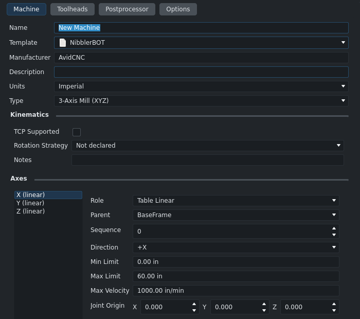
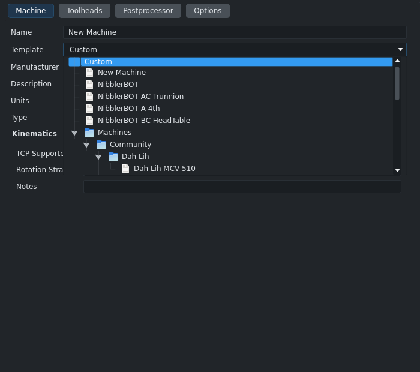
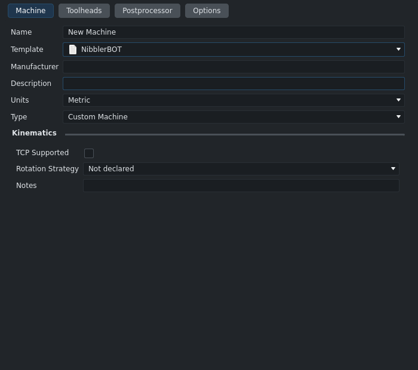
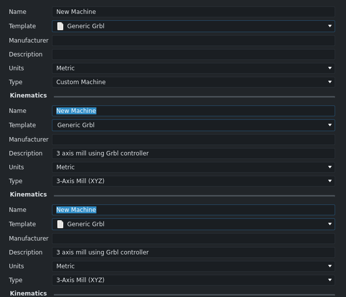
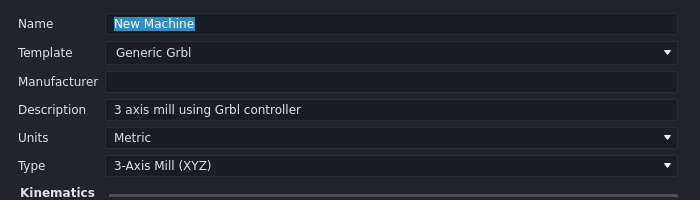

CAM unit tests with the PR applied: Ran 1990 tests · OK (skipped=13, expected failures=4)





Tree: review2 (upstream/main e326ee2f07d + PR commits 9ab53b77ee5, e963b00df1f), Linux, Qt/PySide 6.11.2, off-screen Xvfb :3. Verdict: APPROVE with nits.
The bug is real and not Windows-only: on main, Linux, Qt 6.11.2, clicking a template in the drop-down changes the combo text but loads nothing. With the PR, mouse picks load (top-level and nested addon templates, first and second pick).
Keyboard pick still loads nothing (arrow keys + Enter): the combo shows the new name, the fields keep
the old machine. Also on main, but the PR only fixes the mouse. Hooking activated covers both (tested).
Right-to-left UI (Arabic, Hebrew): the folder arrow stops working with the PR (press collapses, release expands again). Main toggles once.
Nits: _skip_next_hide / hidePopup override now dead, docstring typo, combo current item not
updated for nested picks, commit title "Update machine_editor.py".
Regression from #28405 (2026-03-22): #28011's flat combo loaded on currentIndexChanged; #28405
switched to a tree popup and clicked, which never fires for leaves (see below).
Simpler fix tested (simpler-fix.patch, 76-line git diff, +16/-20, against upstream/main): load
from the combo's activated signal (_load_template(self._template_tree_view.currentIndex()) when
selectable), keep the clicked handler for folders only, and drop _TemplateComboBox /
_skip_next_hide (folders stay open without them). Real mouse + keyboard on Linux: all cases pass,
including keyboard and right-to-left, where the PR fails.
QComboBoxPrivateContainer installs an event filter on the popup view and its viewport
(qcombobox.cpp, setItemView). On MouseButtonRelease over an enabled and selectable current item it
calls combo->hidePopup(), emits itemSelected(view->currentIndex()) and returns true. So the release
never reaches QAbstractItemView::mouseReleaseEvent, and clicked (what main connects to) is never
emitted for a leaf. Folders are not selectable, so their release goes through and clicked fires (which is
why folder toggling works on main). This is cross-platform Qt code; it reproduces on Linux with Qt 6.11.2.
Seen directly: on main the combo emits activated(2) (Qt's path) and the tree never emits clicked.
The PR installs its filter on the same viewport after setView(), so it runs before Qt's container
filter (later filters run first), handles the release itself and returns true, so Qt's handling no
longer runs.
Not verified: Windows (no Windows box here). The Linux result matches the Qt source, so Windows should behave the same; why the author sees it only on Windows (or why it once worked) was not established.
| Check | main | PR |
|---|---|---|
| (a) click leaf (NibblerBOT, top level) | combo text set, nothing loaded (Manufacturer empty, Metric, Custom Machine) | loads: AvidCNC, Imperial, 3-Axis Mill, X/Y/Z |
| (a) click nested addon leaf (Machines/Community/Generic/Generic Grbl) | not loaded (same mechanism) | loads (description, Metric, 3-axis) |
| (b) click folder text (Community) | collapses, popup stays open | collapses, popup stays open |
| (c) click folder arrow | toggles once | toggles once (LTR); RTL: no toggle (double toggle) |
| (d) keyboard: open, arrows, Enter | combo text changes, nothing loads | same: nothing loads |
| (e) click outside popup | closes, nothing loads | closes, nothing loads |
| (f) second pick after the first | n/a (nothing loads) | loads the second template |
| QTest cross-check (leaf, folder text, arrow) | leaf not loaded | leaf loads, folder text toggles, arrow toggles once |
Unit tests: FreeCADCmd -t TestCAMApp --safe-mode: Ran 1990 tests, OK (skipped=13, expected failures=4).
There are no machine-editor tests (none reference machine_editor / MachineEditor).
The editor was always closed with reject; no machine files were saved (Machines dir mtimes unchanged).
1. Keyboard selection still loads nothing (also on main).
Open the Template drop-down, move with Up/Down, press Enter: Qt's container handles Enter
(ShortcutOverride -> hidePopup + itemSelected), the combo text changes to the new name, but no
_load_template call happens, so the editor keeps the previous machine while the combo names another.
Suggested fix that covers mouse and keyboard and keeps Qt's own release handling (tested here with
QTest on Linux: nested mouse pick loads, Enter loads, folder text toggles with the popup open): keep
main's clicked handler for folders and add
self.template_combo.activated.connect(lambda _row: self._load_template(self._template_tree_view.currentIndex()))
(Qt emits activated from the same itemSelected path for a mouse release and for Enter). Not tested on
Windows.
2. Right-to-left layout: the folder arrow no longer toggles (regression, minor).
if pos.x() < tree.visualRect(index).left(): return False assumes the branch arrow is left of the item.
In RTL (FreeCAD ships Arabic and Hebrew; Qt switches to RTL for them) the arrow is on the right, so the
tree collapses it on press and the PR's filter expands it again on release.
Qt.RightToLeft (or run FreeCAD in Arabic/Hebrew).not tree.visualRect(index).contains(pos) is true on the
arrow in both directions._TemplateComboBox._skip_next_hide and its hidePopup override are now dead code (nothing sets the
flag); the class docstring "keeps the popup open when a folder item is clicked" is stale. The class can
go back to a plain QComboBox.editingFinished runs findText, which searches only the top level). For nested addon templates it
stays on the previous top-level item: e.g. from a fresh editor, pick Generic Grbl and the combo's current
item is still Custom (no file icon, unlike a top-level pick). Nothing in the editor reads the index, so
cosmetic only. The activated approach above avoids this.Checked, fine: eventFilter is new on MachineEditorDialog (QDialog has no Python override, nothing
else installs the dialog as a filter, the getattr guard covers the edit-existing-machine case where the
tree does not exist); event.position() with the pos() fallback works on Qt 6 (Qt 5 fallback not run);
the QPersistentModelIndex + 0 ms timer loads the right item after the popup closes; click outside
loads nothing.
clicked signal to the release filter, with a new "left of
the item = arrow" rule (tested; RTL regression above)._on_template_tree_clicked split into eventFilter + _load_template; _skip_next_hide left unused
(read).Fix = upstream/main + activated slot, folder-only clicked handler, _TemplateComboBox removed
(simpler-fix.patch). I also ran it with _skip_next_hide kept (variant A): identical results, but
the flag is left set after every folder click, so the smaller version without it was kept. All four
versions ran through the same scripted sequence in one FreeCAD session (main and PR loaded from file
copies, the fix installed in build/release).
| Case | main | PR | simpler fix |
|---|---|---|---|
| (a) top-level leaf (NibblerBOT) | text set, nothing loaded | loads | loads |
| (b) nested addon leaf (Generic Grbl) | text set, nothing loaded | loads | loads |
| (c) folder name click | toggles, popup stays open | toggles, popup stays open | toggles, popup stays open |
| (d) folder arrow click | one toggle | one toggle | one toggle |
| (e) keyboard Up + Enter on a leaf | text changes, nothing loads | text changes, nothing loads | loads (AC Trunnion, 5-axis) |
| (f) keyboard Enter on a folder | no load, no crash; combo text becomes "Machines" | same | same (no load, no crash; text "Machines") |
| (g) click outside the popup | closes, nothing loads | same | same |
| (h) second pick after the first | nothing loads | loads | loads |
| (i) right-to-left arrow click | one toggle per click | no toggle | one toggle per click |
| (j) combo after nested pick (fresh editor) | text + file icon, not loaded | text, no icon (current item still Custom) | text + file icon, loaded |
| Escape with popup open | closes | closes | closes |
(f) on all three: Enter on a folder closes the list and the combo shows the folder name while the old machine stays loaded. Cosmetic and the same everywhere; not addressed by either change.
Unit tests with the fix installed: TestCAMApp --safe-mode: Ran 1987 tests, OK (skipped=13, expected
failures=4) (tests-fix.log; review2 was on its local main, ab631d9acae, whose machine_editor.py is
identical to upstream/main's).
Patch: simpler-fix.patch (also ~/workspace/freecad/freecad-main/pr33255-simpler-fix.patch), black
--line-length 100 clean, git apply --check clean on main. Not tested on Windows, but the fix uses
Qt's own selection path (itemSelected -> activated), which is the same code on every platform.
media/main_popup.png, media/pr_popup.png: the drop-down open, main and PR.media/main_leaf_not_loaded.png: main after clicking NibblerBOT, nothing filled.media/pr_leaf_loaded.png: PR after clicking NibblerBOT, filled.media/pr_nested_combo_index_stale.png: PR nested pick loaded, combo item still Custom (no icon).media/pr33255_template_pick.mp4: captioned real-mouse run on the PR (folder text, arrow, two picks,
keyboard pick that does not load).media/fix_popup.png, media/fix_leaf_loaded.png: simpler fix, drop-down and filled-in editor.media/nested_main_pr_fix.png: nested pick on main / PR / fix (text, icon, loaded or not).media/fix_template_pick.mp4: captioned real-mouse and keyboard run of the simpler fix.